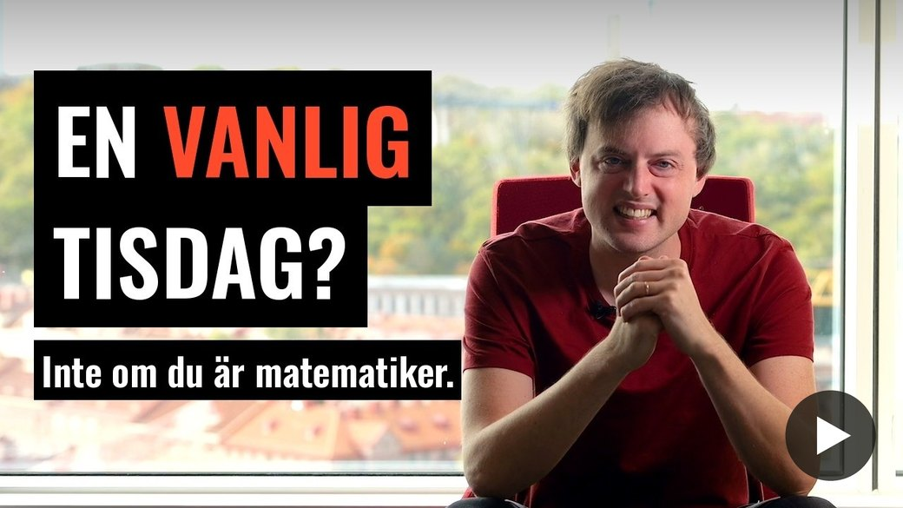
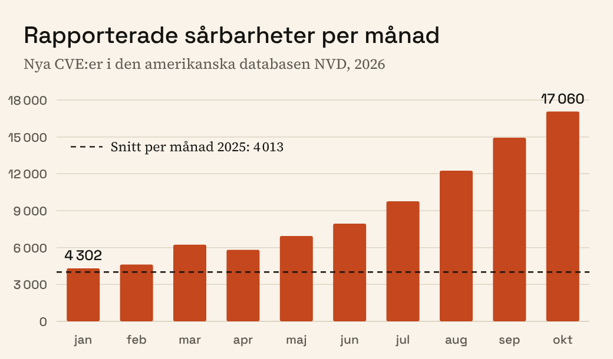
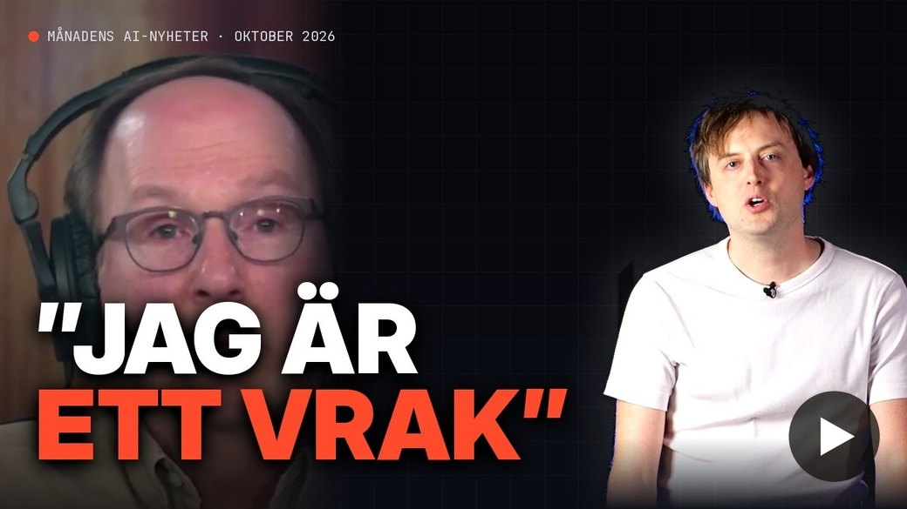
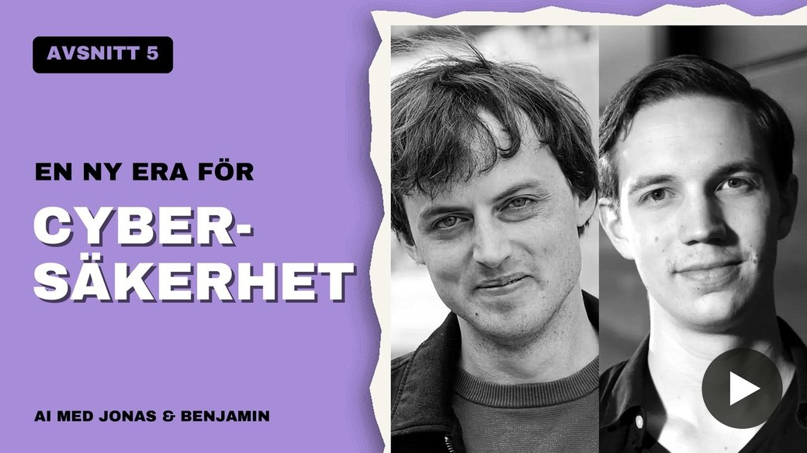
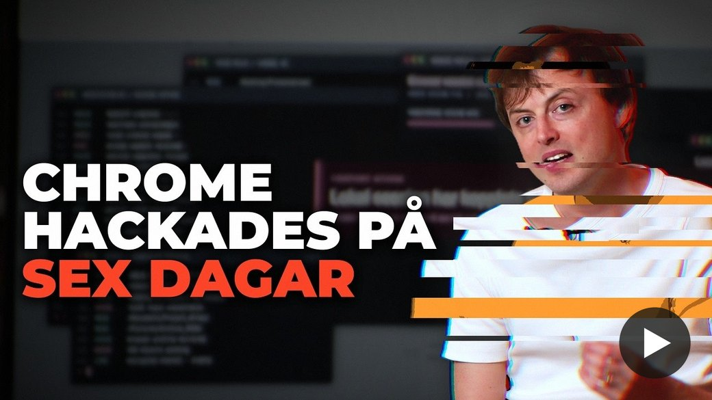

AI-brevet
Jonas von EssenNr 2 · november 2026
Dags för novembers AI-brev. Eller dags och dags, som du kanske noterat kommer brevet senare än planerat. Detta beror tyvärr inte på brist på händelser att rapportera om, snarare tvärtom. Att försöka följa med och rapportera om allt som skett har tagit mer tid än tidigare.
Jag och Benjamin höll den första månatliga AI-briefingen för Sveriges riksdag, som du kan höra mer om i månadens poddavsnitt. Dessutom har jag bjudits in av TV4:s Nyhetsmorgon att i ett återkommande inslag leverera ”Veckans AI-nyheter”. Första avsnittet kan du se här.
Reflektioner
Oktober blev månaden då matematiken som vetenskap kom att förändras för alltid, och AI-hotet från cyberattacker blev tydligt på riktigt.
För fem år sedan kunde språkmodeller inte lösa problem på lågstadienivå. För tre år sedan var de på högstadienivå. Förra året kunde de tampas i mattetävlingar mot världens bästa gymnasieelever. Och under året har de gått från att lösa enskilda olösta problem i januari till att nu fullkomligt vända upp och ner på hela disciplinen. Den 6 oktober släppte OpenAI på en och samma dag lösningar eller dellösningar till 372 öppna matematiska problem, varav en stor del hörde till de mest eftertraktade bland matematiker. Matematiksamfundet reagerade med en blandning av beundran och förtvivlan, och flera har beskrivit det som ett slag mot deras största passion och själva identitet.
Ju mer verifierbart ett fält är, desto lättare är det för AI att bli bra på det, eftersom man generellt tränar modellerna genom att belöna dem när de lyckas. Det är förhållandevis lätt att bekräfta att en lösning på ett matteproblem är korrekt, även om det kan vara väldigt svårt att komma fram till lösningen. Det här är en stor förklaring till att matematiken är ett av de första fälten att ”falla” för AI-utvecklingen. Men i takt med att AI-företagen tar fram allt bättre data ökar sannolikheten att även mindre verifierbara fält går samma öde till mötes. Vi har exempelvis redan sett en del begynnande resultat inom biologi och fysik.

En stor del av vår moderna värld är idag uppkopplad mot internet. Mycket av koden som internet vilar på är dock skriven i språk som C, som skapades på 70-talet utan någon som helst tanke på IT-säkerhet. Detta har gjort att man ständigt upptäcker nya säkerhetshål i existerande programvara. För det mesta har takten varit så pass långsam och angriparna så pass få att det har gått att uppdatera sårbarheter innan storskaliga attacker genomförs. Men i takt med att AI under året blivit allt bättre på just att hacka har angriparna fått verktyg som gör det möjligt att upptäcka betydligt fler brister och dessutom i en takt som hade varit omöjlig tidigare. Kurvan över rapporterade sårbarheter per månad visar utvecklingen med mer än önskvärd tydlighet.

En enskild hackare använde AI för att attackera över 1 000 sidor och lyckades göra intrång hos över hundra företag. Lyckligtvis använder även försvararna AI, vilket bland annat gjorde det möjligt att upptäcka och laga ett kritiskt hål i PHP, språket bakom ungefär 70 % av världens webbsidor. Säkerhetsföretag rapporterade även brister i Google Chrome som kunnat påverka en miljard datorer.
Man pratar nu om att tiden framöver kommer bli skakig cybersäkerhetsmässigt och att det på sikt kan vara nödvändigt att bygga en helt ny, säkrare version av internet.
Att AI nu mer tydligt börjar påverka samhället gör också att rösterna för att bromsa utvecklingen blir fler. Demokraternas överraskande stora segrar i USA:s mellanårsval tycks delvis ha berott på AI-oro. Mer om det och andra nyheter från november i nästa AI-brev.
AI-nyheter

Avsnitt två av månadens AI-nyheter sammanfattade oktober.
Fördjupa dig
Avsnitt 5 av min och Benjamins podcast handlar om cyberattacker, sätt att ”tankeläsa” AI och öppna AI-modeller. Slidesen från Benjamins del av AI-briefingen i riksdagen finns här. Vi hoppas återkomma med en inspelad version inom kort.
Om du inte redan gjort det rekommenderas starkt att följa de sju tipsen för att stärka sin egen cybersäkerhet här. Se också gärna den längre intervjun med cybersäkerhetsprofessorn Andrei Sabelfeld som jag spelade in på Chalmers i Göteborg.

En ny era för cybersäkerhet?
Kan AI hacka hela internet? Intervju med Andrei Sabelfeld
Podden finns också på Spotify.
Engagera dig
Lördagen den 5:e december kl. 12.00 hålls en demonstration för fortsatt mänsklig kontroll av AI på Medborgarplatsen i Stockholm, arrangerad av PauseAI Sverige. Jag kommer medverka som talare och hoppas få se dig där!
Här kan du anmäla intresse via Facebook-eventet. Du hittar även information på www.jonasvonessen.se/agera.
Hör gärna av dig om du har något AI-relaterat du skulle vilja tipsa eller veta mer om.
Ha en härlig höststräcka in mot jultiderna!
Varma hälsningar,
Jonas